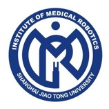

柳宇轩 (Yuxuan Liu)
博士研究生,共青团员 |
关于我
我现在是一名就读于上海交通大学生物医学工程学院&医疗机器人研究院的博士生(2022级)。在此之前, 我于2022年6月在上海交通大学生物医学工程学院获得了生物医学工程专业的工学学士学位和数学与应用数学的辅修学位, 本科连续三学年专业排名:(1/72)。
研究兴趣: 计算机视觉，深度学习，人体行为认知分析，手术机器人。
教育经历
|  | 博士 上海交通大学医疗机器人研究院 (2022.9 ~ 2027.6)
|
|
|
本科 上海交通生物医学工程学院 (2018.9 ~ 2022.6)
|
![[成绩单]](pdf/transcript_scuec.jpg){kind=link}
学术论文
一种高效低能耗移动数据采集与无线充电策略
钟萍，徐爱昆，张艺雯，李亚婷，张一鸣，黄家玮，王建新
软件学报, 2021. [PDF]
EMPC: Energy-Minimization Path Construction for Data Collection and Wireless Charging in WRSN
Ping Zhong, AiKun Xu, Shigeng Zhang, Yiming Zhang and Yingwen Chen
Pervasive and Mobile Computing (PMC), 2021. [JCR Q2][PDF]
An Efficient on-Demand Charging Scheduling Scheme for Mobile Charging Vehicle
Ping Zhong, AiKun Xu, Jianliang Gao, Yiming Zhang and Yingwen Chen
International Journal of Communication Systems (IJCS), 2021. [JCR Q3][PDF]
An Optimization Deployment Scheme for Static Charging Piles Based on Dynamic of Shared E-Bikes
Ping Zhong, AiKun Xu, Yuanming Chen, Feng Gao and Guihua Duan
2019 15th International Conference on Mobile Ad-Hoc and Sensor Networks (MSN-19). [CCF C][PDF]
A Prediction Model of Death Probability for Guiding Wireless Recharging in Sensor Networks
Ping Zhong, AiKun Xu, Shu Lin and Xiaoyan Kui
International Journal of Sensor Networks (IJSNET), 2021. [JCR Q4][PDF]
An Optimal Deployment Scheme for Extremely Fast Charging Stations
Ping Zhong, AiKun Xu, Yilin Kang, Shigeng Zhang and Yiming Zhang
Peer-to-Peer Networking and Applications (P2PNA), 2022. Accepted, [JCR Q2][PDF]
THAN: Multi-Modal Transportation Recommendation with Heterogeneous Graph Attention Networks
AiKun Xu, Ping Zhong, Yilin Kang, Jiongqiang Duan, Mingming Lu and Chuan Shi
IEEE Transactions on Intelligent Transportation Systems (T-ITS), 2021. Under Review, [JCR Q1]
发明专利
基于团划分的静态充电桩部署方法
钟萍, 徐爱昆, 奎晓燕, 张艺雯
国家发明专利, 公开号:CN109872070A
其他项目
具有个性化和情境感知的多模态交通推荐算法研究(No. 2021zzts0735)
负责人; 经费:1万元
中南大学研究生自主探索项目
面向厂区货车的融合式导航系统研究(No. GCX2020347Y)
负责人; 经费:1万元
中南大学校企合作项目
面向机器人的适应性智能导航与场景感知(No. 2021zzts0753)
参与人; 经费:1万元
中南大学研究生自主探索项目